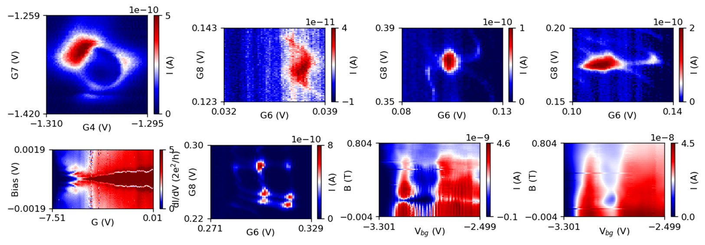

Pages are auto-generated from this repo (where you can comment, report issues). How do I get the name for this website? First, I steal the idea of "Zero-bias Zoo" from slide 25 in this lecture. Secondly, Phy-Phy-Physics sounds cool to me.
Brief information about building the website can be found in this post
The pictures below are physical signals playing in the park. What are they playing? They are playing a black hole ring :ring:, a hurricane :cyclone:, a spider :spider:, a turtle :turtle:, and so on.
The characters at the bottom are random Chinese poems, got from here, to add some flavor of poetry.
